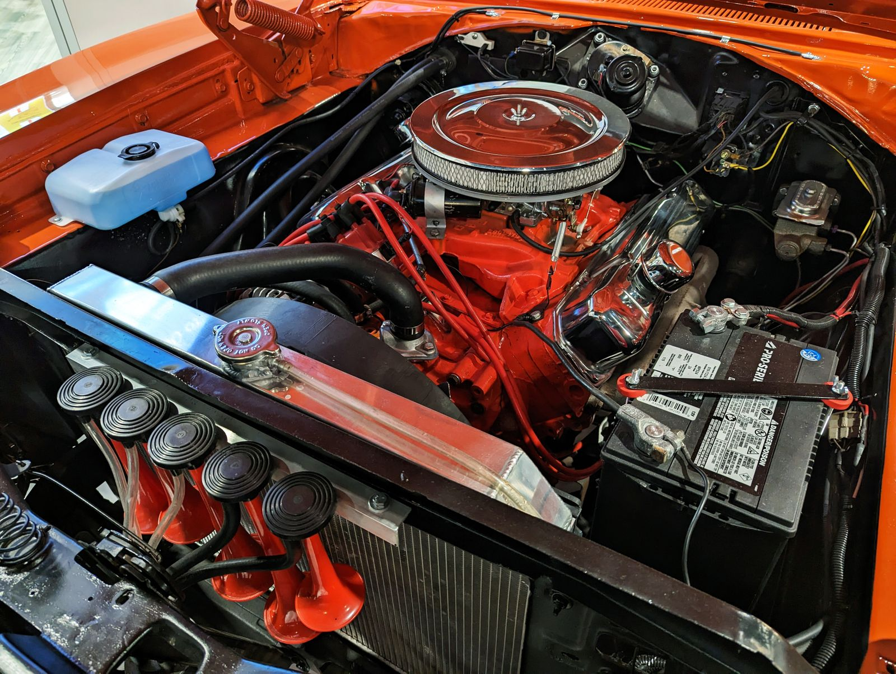

Os bicos injetores são responsáveis por colocar a quantidade certa de combustível dentro do motor, no momento certo. Com o tempo, resíduos de combustível e impurezas se acumulam dentro deles e atrapalham esse trabalho. O resultado aparece na prática: carro mais pesado para arrancar, consumo mais alto e motor sem a mesma força de antes.
O que acontece quando o bico injetor está sujo?
O primeiro sinal costuma ser sutil. O carro demora um pouco mais para pegar de manhã, ou o motor fica instável no ponto morto. Com o entupimento avançando, aparecem falhas de combustão, marcha lenta irregular e aquele "engasgo" quando você pisa fundo no acelerador.
O impacto no bolso vem logo depois. Um bico sujo pulveriza o combustível de forma irregular, e o motor compensa consumindo mais para entregar a mesma potência. Some a isso a perda de desempenho, e o carro passa a gastar mais para rodar menos. Em muitos casos, esse desgaste também acelera o consumo de outras peças do sistema de ignição.
Limpeza ultrassônica: como funciona?
Na limpeza ultrassônica, o injetor é removido do motor e levado para uma máquina própria, feita especificamente para esse tipo de serviço. Ali, ele passa por um banho com ondas ultrassônicas que quebram os depósitos internos sem danificar os componentes delicados do bico. Depois, cada injetor é testado individualmente para conferir o padrão de pulverização e a vazão.
Esse processo é bem mais completo do que simplesmente injetar um produto de limpeza direto no tanque ou no motor. A injeção de aditivo até ajuda a prevenir sujeira, mas não remove o que já está incrustado dentro do bico. A limpeza ultrassônica ataca o problema na origem, com o injetor fora do motor e sob condições controladas.
Quando a limpeza resolve e quando é preciso trocar?
Na maioria dos casos, o injetor sujo, mas estruturalmente saudável, responde bem à limpeza ultrassônica e volta a funcionar como novo. É a situação mais comum, principalmente em carros que rodam bastante em trânsito parado ou usam combustível de qualidade irregular.
A troca só entra em cena quando o injetor está com algum dano físico, como bobina queimada, agulha travada ou vazamento. Por isso, antes de qualquer decisão, fazemos um checkup eletrônico para saber exatamente o que está acontecendo com cada bico.
Atendemos em Salvador, na Av. ACM
Ficamos na Av. ACM, 3410, Iguatemi, Salvador, e recebemos carro de quem mora ou trabalha em ACM, Itaigara, Pituba, Caminho das Árvores, Horto Florestal, Stiep, Boca do Rio, Imbuí e Tancredo Neves. Funcionamento de segunda a sexta, 8h às 18h, sábado até meio-dia.
Perguntas frequentes sobre limpeza de bicos injetores
Quando devo limpar os bicos injetores?
A recomendação da maioria dos fabricantes é fazer a limpeza a cada 40.000 a 60.000 km rodados. Mas fique atento aos sinais que o carro dá antes disso: consumo de combustível maior que o normal, dificuldade para dar partida, falhas no motor ou perda de potência. Quando isso acontece, vale adiantar a revisão.
Qual a diferença entre limpeza ultrassônica e injeção de produto?
Na limpeza ultrassônica, o injetor sai do motor e é limpo em uma máquina própria para esse fim, com resultado bem mais completo. Na injeção de produto, o injetor permanece no motor durante a limpeza. É mais rápida, mas alcança menos sujeira acumulada. Na Maynard, o serviço é feito com limpeza ultrassônica.
A limpeza de bicos resolve a falha no motor?
Depende da causa da falha no seu caso. Se o problema for entupimento nos injetores, a limpeza resolve. Por isso, antes de qualquer serviço, fazemos um checkup eletrônico para confirmar se a origem da falha está realmente nos bicos ou em outro componente do motor.
Quanto tempo leva a limpeza de bicos injetores?
Em geral, o serviço leva entre 2 e 4 horas. O tempo varia conforme o número de cilindros do motor e o estado de sujeira dos injetores.
Vale a pena limpar os bicos em vez de trocar?
Na grande maioria dos casos, vale sim. Injetores sujos, mas sem dano físico, respondem muito bem à limpeza ultrassônica e voltam a funcionar normalmente. A troca só é indicada quando o injetor está realmente danificado, não apenas sujo.
Se o seu carro está mais pesado para arrancar ou consumindo mais combustível que o normal, marque uma avaliação com a gente. Chame no WhatsApp (71) 99626-6142 ou passe na Av. ACM, nº 3410, no Iguatemi, em Salvador.